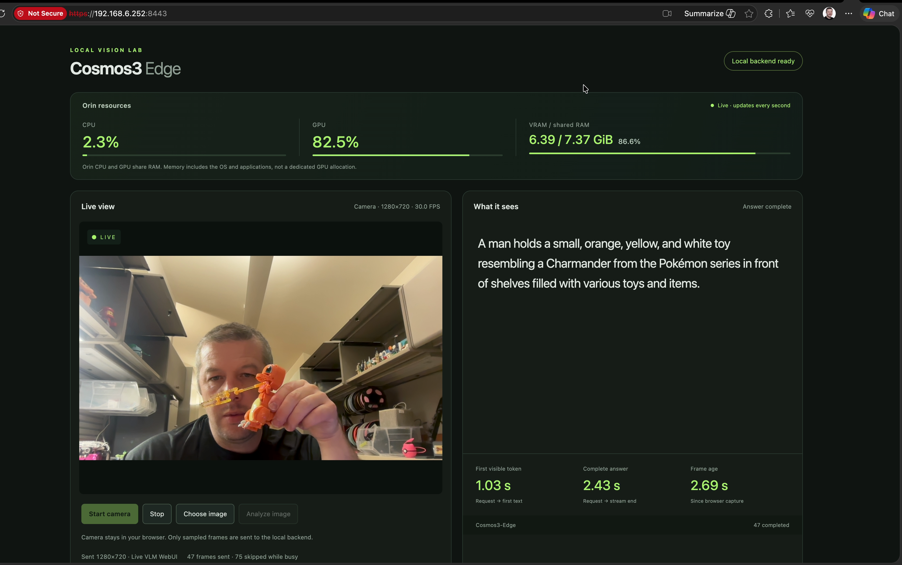
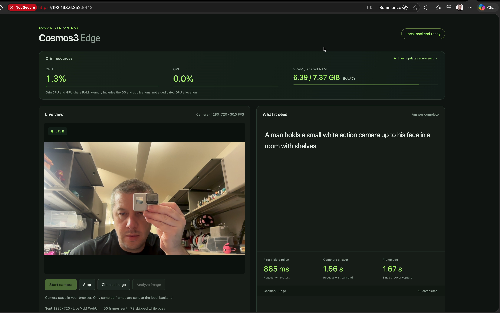
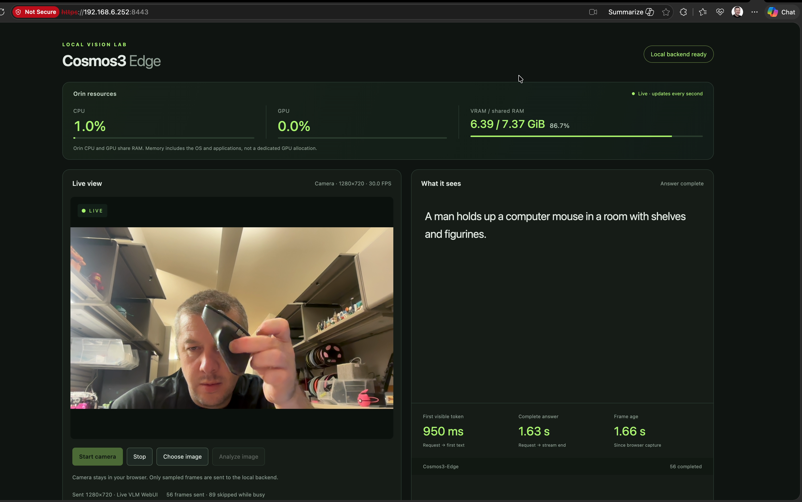
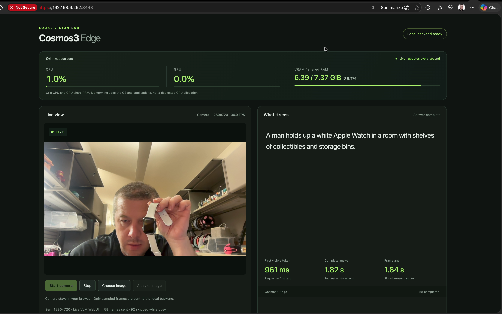
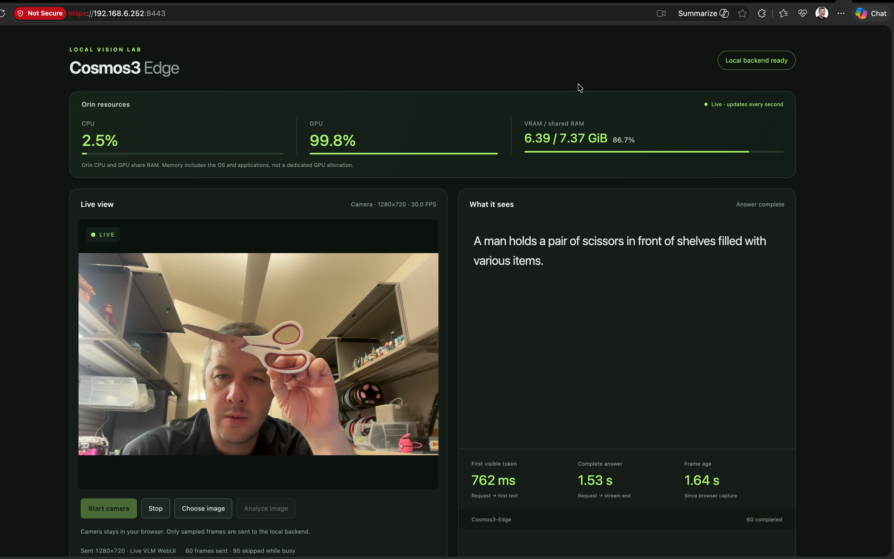
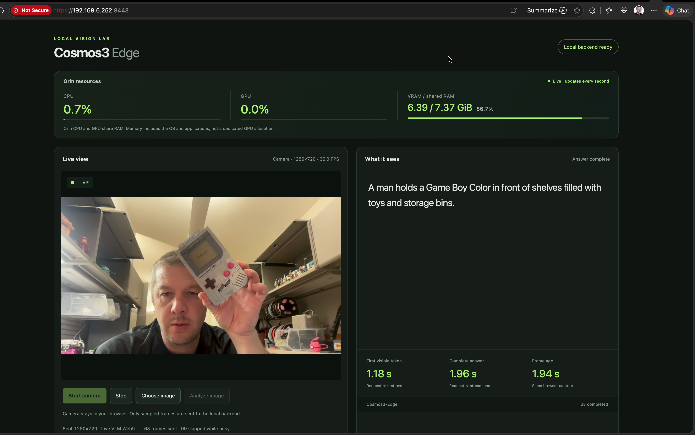

After — Cosmos3-Edge recorded observations
Twenty visible completions; six original-resolution frames. The user’s “after” clip follows restored corrected FP16 and precedes the new MLP optimization goal. It does not demonstrate an accuracy gain or a causal speed gain.
Method and limits · Statistics · Timestamps and checksums · All OCR observations
Visible medians: 975 ms first text · 1.98 s complete answer20 responses, completed counters 45–64, no gaps. The first completion may begin before the clip. UI values are rounded. These are recorded observations, separate from a controlled benchmark.
Visible resource ranges: CPU 0.5–3.5% · GPU 0.0–99.9% · shared RAM 6.38–6.39 of 7.37 GiB. These 492 screen samples repeat more slowly refreshed telemetry and can miss peaks. Shared RAM includes the OS and applications; it is not dedicated model VRAM.
Live VLM WebUI profile, camera 1280×720 / 30.0 FPS, sent images 1280×720 are visible. Sampling controls and max tokens are outside this viewport. Object previews can be newer than the input associated with an answer.
Toy recognition
00:06.992 · source frame 315 · 4195/600 s · completed 47

First text 1030 ms · complete answer 2.43 s · frame age 2.69 s
Visible CPU 2.3% · GPU 82.5% · shared RAM 6.39/7.37 GiB. Sent 47 · skipped while busy 75.
A man holds a small, orange, yellow, and white toy resembling a Charmander from the Pokémon series in front of shelves filled with various toys and items.
An orange character toy with yellow and white details is visibly held in front of shelves; the description matches the visible object family and colors.
The live preview is not a verified copy of the earlier inference input. Click the image to inspect all original pixels.
Action camera recognition
00:14.000 · source frame 611 · 8400/600 s · completed 50

First text 865 ms · complete answer 1.66 s · frame age 1.67 s
Visible CPU 1.3% · GPU 0.0% · shared RAM 6.39/7.37 GiB. Sent 50 · skipped while busy 79.
A man holds a small white action camera up to his face in a room with shelves.
The device has a prominent lens and front display, consistent with an action camera. The housing looks light gray or silver; white is an imprecise color description.
The live preview is not a verified copy of the earlier inference input. Click the image to inspect all original pixels.
Computer mouse recognition
00:30.008 · source frame 1306 · 18005/600 s · completed 56

First text 950 ms · complete answer 1.63 s · frame age 1.66 s
Visible CPU 1.0% · GPU 0.0% · shared RAM 6.39/7.37 GiB. Sent 56 · skipped while busy 89.
A man holds up a computer mouse in a room with shelves and figurines.
A black ergonomic mouse is visibly held up; the completed answer correctly identifies the object family.
The live preview is not a verified copy of the earlier inference input. Click the image to inspect all original pixels.
Watch recognition
00:35.142 · source frame 1524 · 21085/600 s · completed 58

First text 961 ms · complete answer 1.82 s · frame age 1.84 s
Visible CPU 1.0% · GPU 0.0% · shared RAM 6.39/7.37 GiB. Sent 58 · skipped while busy 92.
A man holds up a white Apple Watch in a room with shelves of collectibles and storage bins.
A rectangular smartwatch with a white strap is visibly held up. Watch family and strap color are supported; exact brand is not independently verified from this recording.
The live preview is not a verified copy of the earlier inference input. Click the image to inspect all original pixels.
Scissors recognition
00:40.008 · source frame 1745 · 24005/600 s · completed 60

First text 762 ms · complete answer 1.53 s · frame age 1.64 s
Visible CPU 2.5% · GPU 99.8% · shared RAM 6.39/7.37 GiB. Sent 60 · skipped while busy 95.
A man holds a pair of scissors in front of shelves filled with various items.
Open scissors with light handles are visibly held up; the completed answer correctly identifies the object.
The live preview is not a verified copy of the earlier inference input. Click the image to inspect all original pixels.
Handheld console specificity limitation
00:47.267 · source frame 2076 · 28360/600 s · completed 63

First text 1180 ms · complete answer 1.96 s · frame age 1.94 s
Visible CPU 0.7% · GPU 0.0% · shared RAM 6.39/7.37 GiB. Sent 63 · skipped while busy 99.
A man holds a Game Boy Color in front of shelves filled with toys and storage bins.
The visible gray object has a GAME BOY label and original-style housing, burgundy buttons, and diagonal speaker slots. The specific Color label appears inconsistent with those visible features. Exact hardware versus replica identity is not independently verified. The next completed answer at frame 2167 / 49.141667 s uses the broader label silver Game Boy.
The live preview is not a verified copy of the earlier inference input. Click the image to inspect all original pixels.
Source: After - Codex opted for accuracy - ten percent goal.mov · 49.196667 s · 3348×2096 · 2169 frames · SHA-256 7f0eb89718adba7317b37b93018243c9778503fd75c6e0cf15486c74a3eeb363. The six PNGs are full decoded frames without crop, rescaling, annotation or retouching.